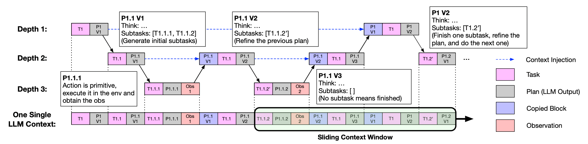
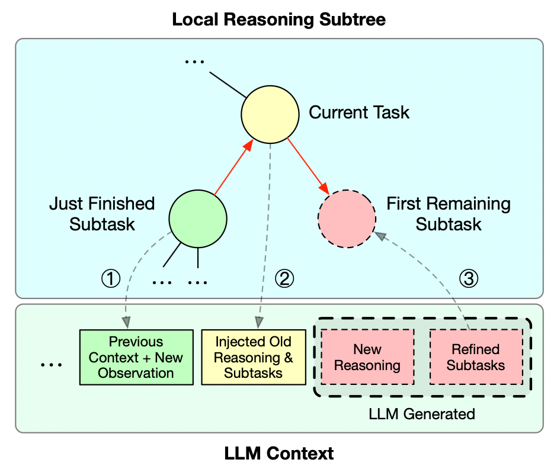

ReCAP: Recursive Context-Aware Reasoning and Planning for Large Language Model Agents
Co-developed a hierarchical framework for long-horizon LLM agents that plans ahead, executes the first subtask, recursively decomposes composite work, and re-injects the parent plan on return to keep multi-level context coherent.
- Combines plan-ahead decomposition, structured parent-plan re-injection, and bounded active prompts.
- Evaluated under strict pass@1 on Robotouille, ALFWorld, FEVER, and SWE-bench.